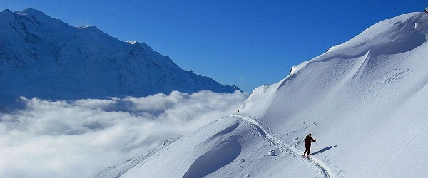
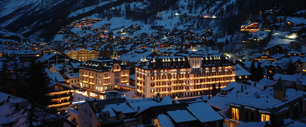
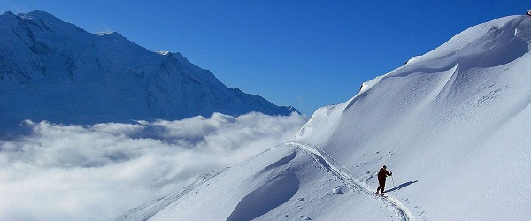
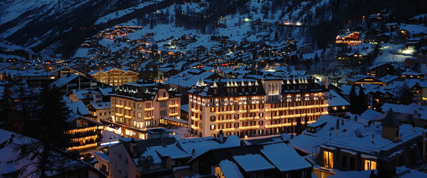

Zermatt
 





Informatie
Zermatt is een gemeente in het district Visp in het Duitstalige deel van het kanton Wallis in Zwitserland. Het heeft een bevolking van ongeveer 5.800 inwoners.Het dorp ligt aan het einde van Mattertal op een hoogte van 1620 m (5310 ft), aan de voet van de hoogste toppen van Zwitserland. Het ligt ongeveer 10 km (6,2 mi) van de meer dan 10.800 ft (3,291.84 m) hoog Theodul Pass grenst Italie.
Zermatt is beroemd als een berg-en skigebied van de Zwitserse Alpen. Tot het midden van de 19e eeuw was het voornamelijk een agrarische gemeenschap, de eerste en de tragische beklimming van de Matterhorn in 1865 werd gevolgd door een stormloop op de bergen rond het dorp, wat leidt tot de bouw van vele toeristische voorzieningen. Het hele jaar door de bevolking (vanaf december 2011) is 5746, maar er kunnen verschillende keer zoveel toeristen in de stad op een bepaald moment. Een groot deel van de lokale economie is gebaseerd op het toerisme, met ongeveer de helft van de banen in de stad in hotels of restaurants en iets minder dan de helft van alle appartementen zijn vakantie apartments.Just meer dan een derde van de permanente bevolking werd geboren in het dorp, terwijl een ander derde verhuisde naar Zermatt van buiten Zwitserland